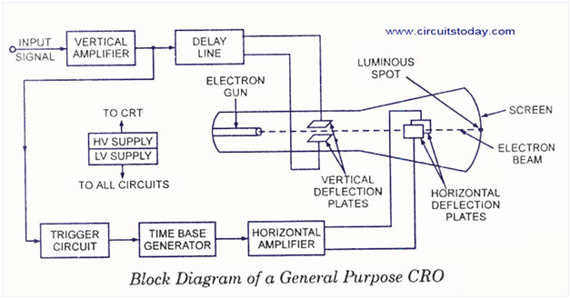

Shakshat Virtual Lab 
INDIAN INSTITUTE OF TECHNOLOGY GUWAHATI
Introduction to CRO – Cathode Ray Oscilloscope
The cathode ray oscilloscope is probably the most useful and versatile laboratory instrument for the development of electronic circuits and systems. It is used for studying wave shapes of alternating currents and voltages as well as for measurement of voltage, current, power and frequency, in fact, almost any quantity that involves amplitude and waveform. It allows the amplitude of electrical signals as a function of time on the screen. It is widely used for trouble shooting radio and TV receivers as well as laboratory work involving research and design. It can also be employed for studying the wave shape of a signal with respect to amplitude distortion and deviation from the normal. In true sense the cathode ray oscilloscope has been one of the most important tools in the design and development of modern electronic circuits.
The oscilloscope is basically an electron beam voltmeter. The main part of oscilloscope is the Cathode Ray Tube (CRT) which makes the applied signal visible by the deflection of a thin beam of electrons. Since the electron has practically no weight, and hence no inertia, therefore the beam of electrons can be moved to follow waveforms varying at a rate of times/second.Thus, the electron beam faithfully follows rapid variations in signal voltage and traces a visible path on the CRT screen. In this way, rapid variations, pulsations or transients are reproduced and the operator can observe the waveform as well as measurer amplitude at nay instant of time.
The major block circuit shown in below Fig. of a general purpose CRO is as follows:
1. CRT
2. Vertical amplifier
3. Delay line
4. Time base
5. Horizontal amplifier
6. Trigger circuit
7. Power supply

1. CRT
This is the cathode ray tube which emits electrons that strikes the phosphor screen internally to provide a visual display of signal.
2. Vertical Amplifier
This is a wide band amplifier used to amplify signals in the vertical section.
3. Delay Line
It is used to display the signal for some time in the vertical section.
4. Time Base
It is used to generate the sawtooth voltage required to deflect the beam in the horizontal section.
5. Horizontal Amplifier
This is used to amplify the sawtooth voltage before it is applied to horizontal deflection plates.
6. Trigger Circuit
This is used to convert the incoming signal into trigger pulses so that the input signal and the sweep frequency can be synchronized.
7. Power Supply
There are two power supplies, a -ve High Voltage (HV) supply and a +ve Low Voltage (LV) supply. Two voltages are generated in the CRO. The +ve voltage supply is from + 300 to 400 V. The –ve high voltage supply is from -1000 to -1500 V. This voltage is passed through a bleeder resistor at a few mA. The intermediate voltages are obtained from the bleeder resistor for intensity, focus and positioning controls.